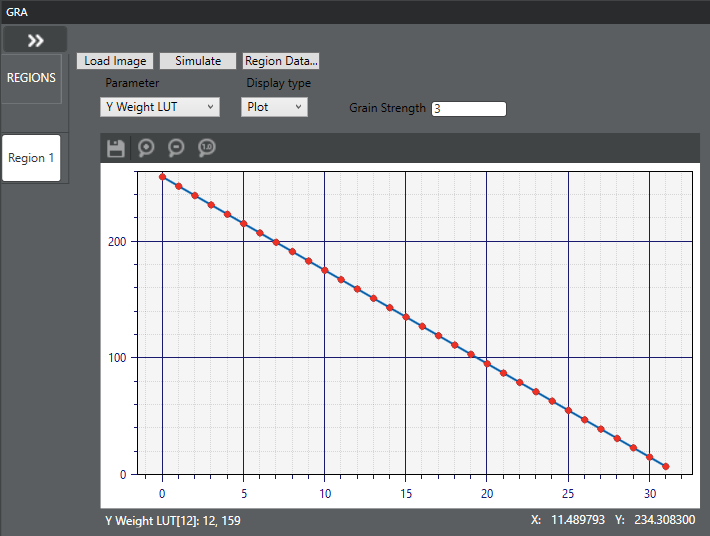

Before tuning the GRA module, determine how many lighting regions you
need and create them in the Parameter Editor.
-
On the Pipeline tab,
click .
-
Select the Region you want to tune.
-
Click Load Image and upload a raw image of a scene to
evaluate the grain.
-
Evaluate the image and the three GRA lookup tables to determine if any
adjustments are necessary. Use the Parameter list to
select the appropriate LUT and select Plot or Grid as the Display
type.

-
To adjust the strength, enter a new value in the Grain
Strength field.
-
To adjust LUT values, select the appropriate LUT, and do one of the following:
- If using Display type = Plot, drag the
appropriate point to the adjusted value.
- If using Display type = Grid, enter a new value
in the appropriate field.
-
Click to save the changes.
-
Upload the image again to evaluate the effect of the changes.